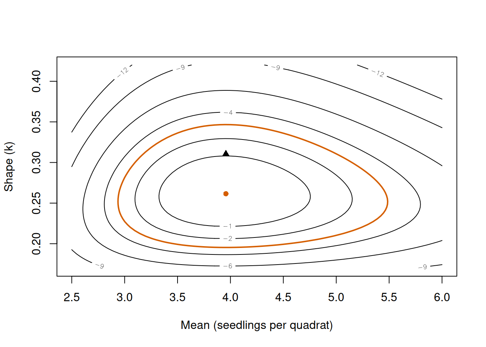
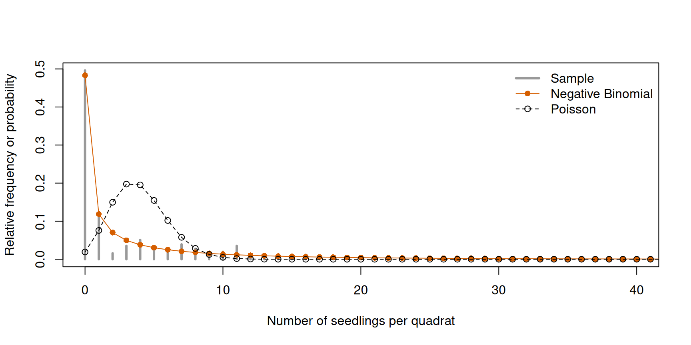
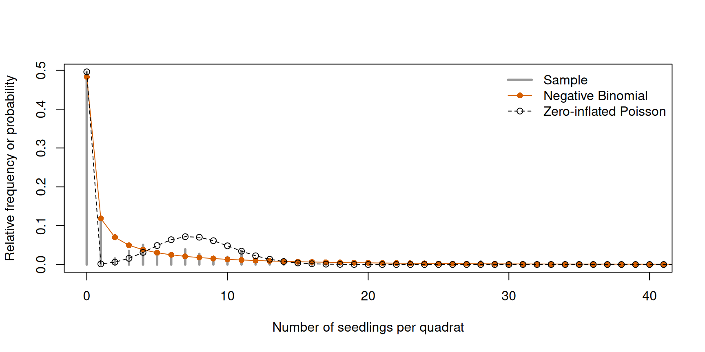
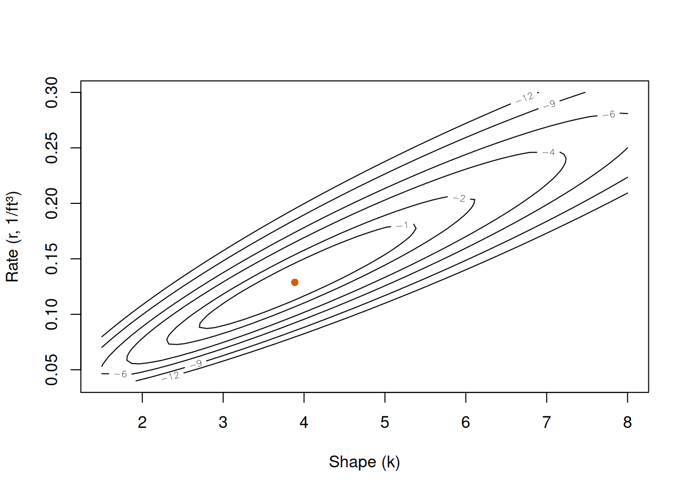
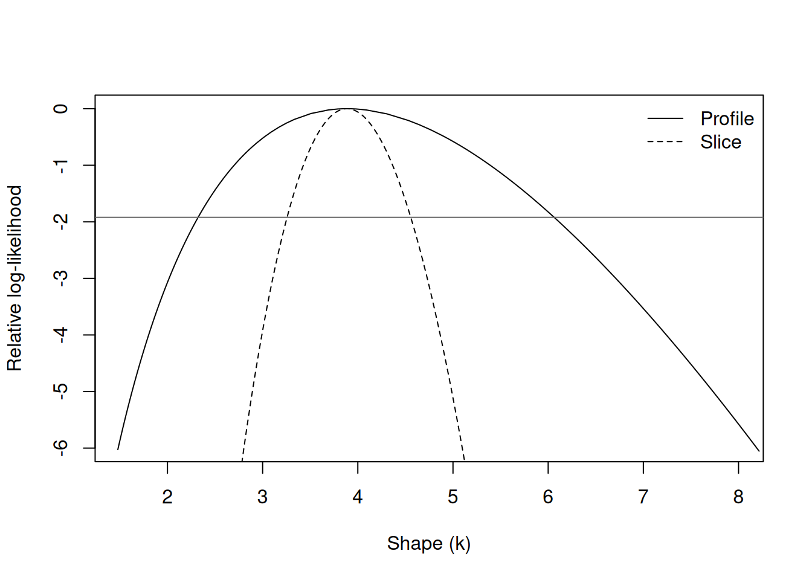

# Load RTMB first and RTMBdist second.
library(RTMB)
library(RTMBdist)
# Connect a likelihood to a data set.
cmb = function(f, d) function(p) f(p, d)Chapter 4: Maximum likelihood estimation — solutions
The fully worked first exercise is on the student practical page. These solutions use the same data, tasks and seeds as Exercises 2–5 on that page. Exercises 1 to 4 are the core of the practical and Exercise 5 is extra practice.
As on that page, we load RTMB first and RTMBdist second, and define the helper cmb() that connects a likelihood to a data set:
1 Exercise 2: Glacier lily seedlings in quadrats
The data set Lily_sum in the package emdbook contains counts of the glacier lily Erythronium grandiflorum in a grid of 16 × 16 quadrats of 2 m × 2 m in Washington Gulch, sampled in 1992 (Thomson et al. 1996). We use the column seedlings, the number of seedlings in each of the 256 quadrats. Load the data with data(Lily_sum, package = "emdbook").
Let \(X_i\) be the number of seedlings in quadrat \(i\). We use a Negative Binomial model with mean \(\mu\) and shape \(k\),
\[ X_i \sim \operatorname{NegBin}(\mu, k), \qquad \operatorname{Var}(X_i)=\mu+\frac{\mu^2}{k}, \]
and assume that the quadrats are i.i.d. Neighbouring quadrats of a grid are likely to resemble each other, so this is a simplification, as it was for the visits to owl nests in the Chapter 3 practical. This course does not model the dependence among neighbouring quadrats; Chapter 7 deals with a related case, observations that come in groups, such as the visits to one nest.
- Estimate \(\mu\) and \(k\) with the method of moments, as in the Chapter 3 practical. Also calculate the fraction of quadrats without seedlings and the largest count.
- Write the NLL of the model with \(\log\mu\) and \(\log k\) as parameters, process it with
MakeADFun()and minimise it withoptim(), using the method-of-moments estimates as starting values. Report the estimates on the original scale. Compare the log-likelihood at the maximum likelihood estimates with the log-likelihood at the method-of-moments estimates. - Calculate the log-likelihood on a grid of values of \(\mu\) and \(k\) (for example, \(\mu\) from 2.5 to 6 seedlings per quadrat and \(k\) from 0.17 to 0.42) with two nested
forloops that call the functionfnof the object, and draw the contours of the relative log-likelihood withcontour(). Add both pairs of estimates and the contour of the approximate joint 95% confidence region. Is the method-of-moments estimate inside the region? - Calculate a 95% Wald interval for \(k\) (on the log scale, with the endpoints transformed back) with the standard error from
sdreport(). Then calculate the 95% likelihood profile interval for \(k\) withTMB::tmbprofile()andconfint(), and compare it with the Wald interval. - Plot the relative frequencies of the counts together with the probabilities of the fitted Negative Binomial model and of a Poisson model fitted to the same counts (the maximum likelihood estimate of its mean is the sample mean). Compare the fraction of empty quadrats under each model with the observed fraction, and compare the two models with AIC and with its small-sample correction AICc (see Model comparison with AIC).
# Load the glacier lily data from the emdbook package without attaching the package.
data(Lily_sum, package = "emdbook")
# Number of seedlings in each 2 m by 2 m quadrat, and the number of quadrats.
lily_counts = Lily_sum$seedlings
n_lily = length(lily_counts)1.1 Solution
1.1.1 Question 1
The observational unit is one quadrat. As in the Chapter 3 practical, the method of moments equates the mean and the variance of the model with those of the sample, which gives \(\hat\mu=\overline x\) and \(\hat k_{\mathrm{MM}}=\hat\mu^2/(\hat\sigma^2-\hat\mu)\), where \(\hat\sigma^2\) is the variance of the sample with divisor \(n\):
# Method-of-moments estimates, as in the practical of Chapter 3: the mean, the variance
# with divisor n, and the shape k from variance = mu + mu^2 / k.
mu_mom_lily = mean(lily_counts)
var_mom_lily = mean((lily_counts - mu_mom_lily)^2)
k_mom_lily = mu_mom_lily^2 / (var_mom_lily - mu_mom_lily)
c(
n_quadrats = n_lily,
mean = mu_mom_lily,
var = var_mom_lily,
k_mom = k_mom_lily,
fraction_empty = mean(lily_counts == 0),
maximum = max(lily_counts)
) n_quadrats mean var k_mom fraction_empty
256.0000000 3.9570312 54.3458099 0.3107457 0.4960938
maximum
72.0000000 There are 256 quadrats, with a mean of 3.96 seedlings per quadrat and a variance of 54.3, almost 14 times the mean. The method-of-moments estimate of the shape is therefore small, \(\hat k_{\mathrm{MM}}\approx 0.31\). Half of the quadrats have no seedlings (127 of 256, a fraction of 0.496), while the largest count is 72 seedlings.
1.1.2 Question 2
The NLL is the one of the theory, with dnbinom2() and with \(\log\mu\) and \(\log k\) as parameters, so that both stay positive. Here the data are called counts, so that is the name that the list of data must use when we connect the NLL to the seedling counts. We start the search at the method-of-moments estimates. The function fn of the object returns the NLL for any vector of parameters on the log scale, so we also use it to calculate the log-likelihood at the method-of-moments estimates:
# Negative log-likelihood of the Negative Binomial model with mean mu and shape k.
nb_nll = function(parms, data) {
# Make the elements of both lists available by name.
getAll(parms, data)
# Transform the parameters to the original scale.
mu = exp(log_mu)
k = exp(log_k)
-sum(dnbinom2(x = counts, mu = mu, size = k, log = TRUE))
}
# Process the NLL of the seedling counts, starting from the method-of-moments estimates
# on the log scale.
lily_obj = MakeADFun(
cmb(nb_nll, list(counts = lily_counts)),
list(log_mu = log(mu_mom_lily), log_k = log(k_mom_lily)),
silent = TRUE
)
# Log-likelihood at the method-of-moments estimates, on the log scale.
loglik_mom_lily = -lily_obj$fn(c(log(mu_mom_lily), log(k_mom_lily)))
# Fit with BFGS and check the convergence code.
lily_fit = optim(par = lily_obj$par, fn = lily_obj$fn, gr = lily_obj$gr, method = "BFGS")
lily_fit$convergence[1] 0# Estimates on the original scale.
mu_mle_lily = unname(exp(lily_fit$par["log_mu"]))
k_mle_lily = unname(exp(lily_fit$par["log_k"]))
c(mu_mle = mu_mle_lily, k_mle = k_mle_lily) mu_mle k_mle
3.9570312 0.2615053 # Log-likelihood at the maximum likelihood estimates and at the method-of-moments estimates.
loglik_mle_lily = -lily_fit$value
c(mle = loglik_mle_lily, mom = loglik_mom_lily) mle mom
-564.2299 -565.3384 The convergence code is 0. The maximum likelihood estimates are \(\hat\mu\approx 3.96\) seedlings per quadrat, which is the mean of the sample (as for any Negative Binomial model), and \(\hat k\approx 0.26\), somewhat smaller than the method-of-moments estimate of 0.31. The log-likelihood is \(-564.2\) at the maximum likelihood estimates and \(-565.3\) at the method-of-moments estimates. The difference of 1.1 units means that the observed counts are about three times more probable (\(e^{1.1}\)) under the former.
1.1.3 Question 3
The grids of the question contain both pairs of estimates with some margin. We fill a matrix that has one row per value of \(\mu\) and one column per value of \(k\). Inside the loops we call lily_obj$fn() with the logarithms of the candidate values and change the sign of the NLL that it returns. The cutoff for a joint region of two parameters is half the 0.95 quantile of a chi-squared distribution with two degrees of freedom (see Uncertainty from the likelihood):
# Grids of candidate values for the mean (seedlings per quadrat) and the shape.
mu_grid_lily = seq(from = 2.5, to = 6, length.out = 71)
k_grid_lily = seq(from = 0.17, to = 0.42, length.out = 71)
# Fill a matrix with two nested loops: row i is the i-th mean and column j the j-th shape.
# fn() takes log(mu) and log(k) and returns the NLL.
loglik_surface_lily = matrix(NA, nrow = length(mu_grid_lily), ncol = length(k_grid_lily))
for (i in seq_along(mu_grid_lily)) {
for (j in seq_along(k_grid_lily)) {
loglik_surface_lily[i, j] = -lily_obj$fn(c(log(mu_grid_lily[i]), log(k_grid_lily[j])))
}
}
# Relative log-likelihood: the difference from the maximum found by optim().
relative_surface_lily = loglik_surface_lily - loglik_mle_lily
# Cutoff of the relative log-likelihood for a joint 95% region of two parameters:
# half the 95% quantile of a chi-squared distribution with two degrees of freedom.
joint_cutoff = qchisq(p = 0.95, df = 2) / 2
joint_cutoff[1] 2.995732The function contour() draws the matrix, as in the Chapter 1 practical. A second call with add = TRUE draws the contour of the joint region on top of the first plot, and points() adds the two pairs of estimates:
# Contours of the relative log-likelihood with base R, then the joint region on top.
contour(
x = mu_grid_lily,
y = k_grid_lily,
z = relative_surface_lily,
levels = c(-12, -9, -6, -4, -2, -1),
xlab = "Mean (seedlings per quadrat)",
ylab = "Shape (k)"
)
contour(
x = mu_grid_lily,
y = k_grid_lily,
z = relative_surface_lily,
levels = -joint_cutoff,
lwd = 2,
col = "#D55E00",
add = TRUE,
drawlabels = FALSE
)
# Maximum likelihood estimate (circle) and method-of-moments estimate (triangle).
points(x = mu_mle_lily, y = k_mle_lily, pch = 16, col = "#D55E00")
points(x = mu_mom_lily, y = k_mom_lily, pch = 17)
The cutoff is 3.00. The thick contour in Figure 1 joins the combinations of \(\mu\) and \(k\) whose log-likelihood is 3.00 units below the maximum, and the area inside it is the approximate joint 95% confidence region. As for the owls in the theory, the contours are not tilted: with the mean as a parameter, the estimates of \(\mu\) and \(k\) hardly depend on each other. The method-of-moments estimate lies inside the region, near its upper edge in \(k\) (its relative log-likelihood is \(-1.1\), as we saw in question 2). So for these data the method-of-moments estimates are among the combinations of parameter values that the likelihood supports.
1.1.4 Question 4
For the Wald interval, sdreport() gives the standard errors of the estimates of \(\log\mu\) and \(\log k\). We calculate the interval for \(\log k\) and transform its endpoints with exp():
# 0.975 quantile of the standard Normal distribution.
critical_value = qnorm(p = 0.975)
# Standard errors of the estimates of log(mu) and log(k).
lily_sd = sdreport(lily_obj)
lily_summary = summary(lily_sd)
lily_summary Estimate Std. Error
log_mu 1.375494 0.1261932
log_k -1.341301 0.1170098# Wald interval for k: calculate on the log scale and back-transform the endpoints.
wald_k_lily = exp(
lily_summary["log_k", "Estimate"] +
c(-1, 1) * critical_value * lily_summary["log_k", "Std. Error"]
)
wald_k_lily[1] 0.2079130 0.3289118The standard errors are 0.126 for the estimate of \(\log\mu\) and 0.117 for the estimate of \(\log k\), and the Wald interval for \(k\) goes from 0.208 to 0.329.
For the likelihood profile interval we follow the theory. TMB::tmbprofile() moves \(\log k\) away from its estimate and re-estimates \(\log\mu\) at each step, and confint() locates the two values at which the relative profile log-likelihood crosses the cutoff. The profile is calculated for \(\log k\), so we transform the endpoints with exp():
# Profile of log(k) and the endpoints of its 95% interval, transformed back.
lily_profile_k = TMB::tmbprofile(lily_obj, name = "log_k", trace = FALSE)
exp(confint(lily_profile_k)) lower upper
log_k 0.2072426 0.3279545The likelihood profile interval for \(k\) goes from 0.207 to 0.328. The Wald interval goes from 0.208 to 0.329, so the two intervals agree to two decimals. With 256 quadrats the profile log-likelihood is close to a parabola on the log scale of \(k\), and the fast approximation gives the same answer as the reference method.
1.1.5 Question 5
We calculate the relative frequency of every count, from zero to the largest one in the sample, and its probability under both models. For the Poisson model the MLE of \(\lambda\) is the mean of the sample, so no optimisation is needed. The AIC is \(2K-2\ell(\hat\theta)\), with \(K=1\) for the Poisson model and \(K=2\) for the Negative Binomial model:
# Relative frequency of every count from zero to the largest one: the fraction of
# quadrats with that number of seedlings.
count_values_lily = 0:max(lily_counts)
observed_lily = rep(NA, times = length(count_values_lily))
for (i in seq_along(count_values_lily)) {
observed_lily[i] = mean(lily_counts == count_values_lily[i])
}
# Fitted probabilities of every count under the Negative Binomial and Poisson models. The
# MLE of the Poisson mean is the sample mean.
lambda_mle_lily = mean(lily_counts)
nb_probability = dnbinom2(x = count_values_lily, mu = mu_mle_lily, size = k_mle_lily)
poisson_probability = dpois(x = count_values_lily, lambda = lambda_mle_lily)
# Fraction of empty quadrats: observed and under each model.
c(
observed = mean(lily_counts == 0),
negative_binomial = dnbinom2(x = 0, mu = mu_mle_lily, size = k_mle_lily),
poisson = dpois(x = 0, lambda = lambda_mle_lily)
) observed negative_binomial poisson
0.49609375 0.48326452 0.01911979 # Log-likelihood of the Poisson model at its maximum, and AIC = 2K - 2 * log-likelihood
# of both models, with K the number of estimated parameters.
loglik_poisson_lily = sum(dpois(x = lily_counts, lambda = lambda_mle_lily, log = TRUE))
n_parms_lily = c(poisson = 1, negative_binomial = 2)
loglik_lily = c(poisson = loglik_poisson_lily, negative_binomial = loglik_mle_lily)
aic_lily = 2 * n_parms_lily - 2 * loglik_lily
aic_lily poisson negative_binomial
2731.833 1132.460 # AICc adds 2K(K + 1) / (n - K - 1) to the AIC, with n the number of quadrats.
aicc_lily = aic_lily + 2 * n_parms_lily * (n_parms_lily + 1) / (n_lily - n_parms_lily - 1)
aicc_lily poisson negative_binomial
2731.849 1132.507 # Relative frequencies of the sample as vertical lines, up to 40 seedlings.
plot(
x = count_values_lily,
y = observed_lily,
type = "h",
lwd = 3,
col = "grey60",
xlim = c(0, 40),
xlab = "Number of seedlings per quadrat",
ylab = "Relative frequency or probability"
)
# Probabilities under the two fitted models, as points joined by lines.
lines(x = count_values_lily, y = nb_probability, type = "o", pch = 16, col = "#D55E00")
lines(x = count_values_lily, y = poisson_probability, type = "o", pch = 1, lty = 2)
legend(
"topright",
legend = c("Sample", "Negative Binomial", "Poisson"),
col = c("grey60", "#D55E00", "black"),
lty = c(1, 1, 2),
lwd = c(3, 1, 1),
pch = c(NA, 16, 1),
bty = "n"
)
The observed fraction of empty quadrats is 0.496. The fitted Negative Binomial model gives a probability of 0.483 to an empty quadrat and the Poisson model only 0.019. Figure 2 shows the same for the other counts (the horizontal axis ends at 40 seedlings, which leaves out the quadrat with 72). The Poisson distribution concentrates its probability around its mean of 4 seedlings, whereas the Negative Binomial distribution follows both the many empty quadrats and the long tail of large counts.
The AIC is 2731.8 for the Poisson model and 1132.5 for the Negative Binomial model. The difference of 1,599 units is very large compared with the two units that the additional parameter costs, so the Negative Binomial model is strongly preferred. AIC ranks the candidates that we give it. Whether there is a better description of the empty quadrats than the Negative Binomial model is the question of Exercise 3.
The AICc is also 2731.8 and 1132.5 (to one decimal), so the comparison is the same. The correction is negligible because 256 quadrats are many more than one or two parameters.
2 Exercise 3: Empty quadrats and zero inflation
About half of the quadrats of Exercise 2 have no seedlings. The Negative Binomial model describes this with a small shape \(k\). A different explanation is that a fraction of the quadrats cannot have seedlings at all (for example, because no seeds arrive there), while the counts in the rest follow a Poisson distribution. This is a zero-inflated Poisson model (see How to make zero-inflated distributions in the supplement). Its probability mass function is
\[ P(X=x\mid\lambda,p_0)= \begin{cases} p_0+(1-p_0)\,e^{-\lambda}, & x=0,\\[4pt] (1-p_0)\,\dfrac{e^{-\lambda}\lambda^{x}}{x!}, & x>0, \end{cases} \]
where \(p_0\) (pzero in the code of the supplement) is the probability that a quadrat cannot have seedlings and \(\lambda\) is the mean number of seedlings in the quadrats that can have them. Use the same counts as in Exercise 2 and the same assumption of i.i.d. quadrats.
- Write a function
my_dzipois(x, lambda, pzero, log = FALSE)that returns the probability mass of the zero-inflated Poisson distribution, or its logarithm whenlog = TRUE. Check that the probabilities add up to one over a wide range of counts, for two combinations of parameter values, and that your function returns the same probabilities asdzipois()of the package RTMBdist, in which \(p_0\) is the argumentzeroprob. - Write the NLL with
dzipois()and with \(\log\lambda\) and \(\operatorname{logit}p_0\) as parameters. Choose starting values from the data (think of the fraction of empty quadrats and of the mean of the quadrats that are not empty) and fit the model. Interpret both estimates. - Compare the zero-inflated Poisson model with the Negative Binomial model of Exercise 2 using AIC and AICc. What does the comparison come down to when both models have the same number of parameters?
- Plot the probabilities of both fitted models over the relative frequencies of the counts. Under each model, calculate the probability of an empty quadrat and the probability of 20 or more seedlings, and compare them with the observed fractions. What does each model say about how the counts arise? Can the comparison identify the ecological cause of the empty quadrats?
2.1 Solution
2.1.1 Question 1
The function follows the two cases of the mass function. It first calculates the Poisson probability of every count multiplied by \(1-p_0\), and then adds \(p_0\) where the count is zero. ifelse() applies its test to every element of x and returns the second argument where the test is TRUE and the third where it is FALSE, so the function accepts a vector of counts, like the d* functions of R. With log = TRUE it returns the logarithm of the result:
# Mass function of a zero-inflated Poisson distribution: with probability pzero a quadrat
# cannot have seedlings, otherwise the count follows a Poisson distribution.
my_dzipois = function(x, lambda, pzero, log = FALSE) {
# Poisson probability scaled by the probability of belonging to the Poisson part.
result = (1 - pzero) * dpois(x = x, lambda = lambda)
# An empty quadrat can come from either part, so pzero is added to the probability of zero.
result = ifelse(x == 0, pzero + result, result)
if (log) {
log(result)
} else {
result
}
}
# The probabilities add up to one over a wide range of counts.
sum(my_dzipois(x = 0:200, lambda = 7.9, pzero = 0.5))[1] 1sum(my_dzipois(x = 0:200, lambda = 2, pzero = 0.1))[1] 1# The same probabilities from dzipois() of RTMBdist, for the counts 0 to 3, and the
# largest difference between the two functions over all the counts.
my_dzipois(x = 0:3, lambda = 2, pzero = 0.1)[1] 0.2218018 0.2436035 0.2436035 0.1624023dzipois(x = 0:3, lambda = 2, zeroprob = 0.1)[1] 0.2218018 0.2436035 0.2436035 0.1624023max(abs(
my_dzipois(x = 0:200, lambda = 7.9, pzero = 0.5) -
dzipois(x = 0:200, lambda = 7.9, zeroprob = 0.5)
))[1] 1.387779e-17Both sums are 1, as they should be for a probability mass function. We used two different pairs of parameter values, the first of which is close to the estimates of question 2. Our function and dzipois() return the same probabilities (the largest difference is of the order of \(10^{-17}\), the precision of the computer), so from here on we use dzipois().
2.1.2 Question 2
Both parameters are constrained. The mean \(\lambda\) is positive, so we search over \(\log\lambda\), and \(p_0\) is a probability, so we search over \(\operatorname{logit}p_0\) and transform it with plogis(). For the starting values, suppose that every empty quadrat is one that cannot have seedlings. Then \(p_0\) is the fraction of empty quadrats and \(\lambda\) is the mean of the quadrats that have seedlings:
# Negative log-likelihood of the zero-inflated Poisson model.
zip_nll = function(parms, data) {
getAll(parms, data)
# Transform the parameters to the original scale.
lambda = exp(log_lambda)
pzero = plogis(logit_pzero)
-sum(dzipois(x = counts, lambda = lambda, zeroprob = pzero, log = TRUE))
}
# Starting values from the data: the mean of the non-empty quadrats for lambda and the
# fraction of empty quadrats for pzero.
lambda_start = mean(lily_counts[lily_counts > 0])
pzero_start = mean(lily_counts == 0)
c(lambda_start = lambda_start, pzero_start = pzero_start)lambda_start pzero_start
7.8527132 0.4960938 # Process the NLL with the starting values on the optimised scale, and fit it.
zip_obj = MakeADFun(
cmb(zip_nll, list(counts = lily_counts)),
list(log_lambda = log(lambda_start), logit_pzero = qlogis(p = pzero_start)),
silent = TRUE
)
zip_fit = optim(par = zip_obj$par, fn = zip_obj$fn, gr = zip_obj$gr, method = "BFGS")
zip_fit$convergence[1] 0# Estimates on the original scale and the maximum log-likelihood.
lambda_zip = unname(exp(zip_fit$par["log_lambda"]))
pzero_zip = unname(plogis(zip_fit$par["logit_pzero"]))
loglik_zip = -zip_fit$value
c(lambda = lambda_zip, pzero = pzero_zip, loglik = loglik_zip) lambda pzero loglik
7.8496514 0.4958972 -848.0293019 # Probability of a count of zero under a Poisson distribution with the estimated lambda.
dpois(x = 0, lambda = lambda_zip)[1] 0.0003898879The convergence code is 0. The estimates are \(\hat\lambda\approx 7.85\) seedlings per quadrat and \(\hat p_0\approx 0.496\), and the maximum log-likelihood is \(-848.0\). According to this model, about half of the quadrats cannot have seedlings and the other half have 7.85 seedlings on average. The estimates are almost identical to the starting values (7.85 and 0.496). The reason is that a Poisson distribution with a mean of 7.85 gives a probability of only 0.0004 to a count of zero, so the model attributes practically all the empty quadrats to the zero inflation.
2.1.3 Question 3
The zero-inflated Poisson model has two parameters, like the Negative Binomial model:
# AIC of the zero-inflated Poisson model (K = 2) next to the Negative Binomial model of
# Exercise 2 (K = 2): with the same K, the comparison is a comparison of log-likelihoods.
aic_zip = 2 * 2 - 2 * loglik_zip
c(zero_inflated_poisson = aic_zip, negative_binomial = aic_lily[["negative_binomial"]])zero_inflated_poisson negative_binomial
1700.059 1132.460 # AICc of both models: the correction 2K(K + 1) / (n - K - 1) is the same for both.
aicc_zip = aic_zip + 2 * 2 * (2 + 1) / (n_lily - 2 - 1)
c(zero_inflated_poisson = aicc_zip, negative_binomial = aicc_lily[["negative_binomial"]])zero_inflated_poisson negative_binomial
1700.106 1132.507 The AIC is 1700.1 for the zero-inflated Poisson model and 1132.5 for the Negative Binomial model. Both models have \(K=2\), so the term \(2K\) cancels in the difference and the comparison comes down to the maximum log-likelihoods: the difference of 567.6 units of AIC is twice the difference of 283.8 units of log-likelihood (\(-564.2\) against \(-848.0\)). The Negative Binomial model is strongly preferred. The Poisson model without zero inflation had an AIC of 2731.8 in Exercise 2, so allowing for quadrats that cannot have seedlings improves the Poisson model a great deal, but not enough. The AICc is 1700.1 and 1132.5. The correction of 0.047 units is the same for both models, because they have the same \(K\) and the same \(n\), so the difference does not change either.
2.1.4 Question 4
We calculate the two probabilities under each model, together with the corresponding fractions of the sample. The probability of 20 or more seedlings is one minus the probability of 19 or fewer, which the cumulative distribution functions pzipois() and pnbinom2() of RTMBdist give. One minus the sum of the probabilities of 0 to 19 seedlings, for example 1 - sum(dzipois(x = 0:19, lambda = lambda_zip, zeroprob = pzero_zip)), gives the same result:
# Probabilities of every count under the zero-inflated Poisson model, for the figure.
zip_probability = dzipois(x = count_values_lily, lambda = lambda_zip, zeroprob = pzero_zip)
# Probability of zero and of 20 or more seedlings: observed, zero-inflated Poisson and
# Negative Binomial.
c(
zero_observed = mean(lily_counts == 0),
zero_zip = dzipois(x = 0, lambda = lambda_zip, zeroprob = pzero_zip),
zero_nb = dnbinom2(x = 0, mu = mu_mle_lily, size = k_mle_lily)
)zero_observed zero_zip zero_nb
0.4960938 0.4960937 0.4832645 c(
twenty_or_more_observed = mean(lily_counts >= 20),
twenty_or_more_zip = 1 - pzipois(q = 19, lambda = lambda_zip, zeroprob = pzero_zip),
twenty_or_more_nb = 1 - pnbinom2(q = 19, mu = mu_mle_lily, size = k_mle_lily)
)twenty_or_more_observed twenty_or_more_zip twenty_or_more_nb
0.0390625000 0.0001003246 0.0494588951 # Relative frequencies of the sample as vertical lines, up to 40 seedlings.
plot(
x = count_values_lily,
y = observed_lily,
type = "h",
lwd = 3,
col = "grey60",
xlim = c(0, 40),
xlab = "Number of seedlings per quadrat",
ylab = "Relative frequency or probability"
)
# Probabilities under the two fitted models, as points joined by lines.
lines(x = count_values_lily, y = nb_probability, type = "o", pch = 16, col = "#D55E00")
lines(x = count_values_lily, y = zip_probability, type = "o", pch = 1, lty = 2)
legend(
"topright",
legend = c("Sample", "Negative Binomial", "Zero-inflated Poisson"),
col = c("grey60", "#D55E00", "black"),
lty = c(1, 1, 2),
lwd = c(3, 1, 1),
pch = c(NA, 16, 1),
bty = "n"
)
The zero-inflated Poisson model reproduces the fraction of empty quadrats exactly (0.496) and the Negative Binomial model almost (0.483). The models differ at the other end of the distribution (Figure 3). Ten of the 256 quadrats (3.9%) have 20 or more seedlings. The Negative Binomial model gives a probability of 0.049 to such counts and the zero-inflated Poisson model 0.0001. In the latter, the quadrats that are not empty follow a Poisson distribution, whose variance equals its mean of 7.85, and that makes counts of 20 or more almost impossible. Each of those ten quadrats then contributes a very low probability to the likelihood, which is where the zero-inflated Poisson model loses most of its log-likelihood.
The two models describe the origin of the counts differently. In the zero-inflated Poisson model there are two kinds of quadrats: those that cannot have seedlings, and those in which seedlings occur with one common mean and little variation around it. In the Negative Binomial model there is one kind of quadrat, and the counts vary strongly around a common mean, which produces both the many empty quadrats and the few crowded ones. AIC tells us that the second description fits these counts much better. It does not tell us why the seedlings are distributed in this way. As Chapter 2 explains, a distribution does not identify the source of the overdispersion, and different processes (for example, the dispersal of seeds around the parent plants, or differences in how suitable the quadrats are for germination) can produce the same distribution of counts. The two mechanisms could also act together, as in the zero-inflated Negative Binomial distribution of the supplement, which we do not fit here. To learn about the cause we would need other measurements on the quadrats in addition to the counts.
3 Exercise 4: Timber volume of black cherry trees
This exercise fits a model to continuous measurements, so the contributions to the likelihood are densities. We use a Gamma model with shape \(k\) and rate \(r\) (shape and rate in R), for which
\[ X_i \sim \operatorname{Gamma}(k, r), \qquad E[X_i]=\frac{k}{r}, \qquad \operatorname{Var}(X_i)=\frac{k}{r^2}. \]
We use the data set trees of the Chapter 3 practical, with the measurements of 31 felled black cherry trees. That practical used their heights. Here \(X_i\) is the volume of timber of tree \(i\) in cubic feet (ft³), the column Volume, and we assume that the trees are i.i.d.
- Load the trees with
data(trees, package = "datasets"). Write the NLL of the Gamma model withdgamma(..., log = TRUE)and with \(\log k\) and \(\log r\) as parameters, and mark the data withOBS(), which Exercise 5 uses to simulate. Exercise 5 also relies on these names: call the functiongamma_nll(), the parameterslog_shapeandlog_rate(in this order) and the datax. Calculate method-of-moments estimates from the formulas of the mean and the variance, use them as starting values and fit the model. Report the estimates of \(k\) and \(r\) with their units and the maximum likelihood estimate of the mean volume. - Calculate the correlation between the estimates of \(\log k\) and \(\log r\) with
sdreport(). Calculate the log-likelihood on a grid of values of \(k\) and \(r\) (for example, \(k\) from 1.5 to 8 and \(r\) from 0.04 to 0.3/ft³) and draw the contours of the relative log-likelihood. What does the tilt of the contours mean? - Calculate a slice of the log-likelihood for the shape \(k\), with the rate fixed at its estimate, on a grid of values, and the profile of \(k\) with
TMB::tmbprofile(), and plot both as relative log-likelihoods. Find the range of values of \(k\) for which each curve is within 1.92 units of the maximum (for the profile, withconfint()). Which of the two ranges is a confidence interval, and why is the slice narrower? Hint:tmbprofile()returns a data frame with a columnlog_shape, the values of \(\log k\) that it visited, and a columnvalue, the NLL at each of them. By default the profile stops when the log-likelihood has dropped by about two units; the argumentytolsets that drop (for example,ytol = 6), so that the profile covers the same range as the slice.
3.1 Solution
3.1.1 Question 1
The observational unit is one tree, and the data are the 31 volumes in cubic feet. dgamma() returns a density, so the NLL is minus the sum of the log densities. Both parameters are positive and we search over their logarithms. The line with OBS() marks the data as observations, which does not change the fit and allows us to simulate from the model in Exercise 5. For the starting values we solve \(E[X]=k/r\) and \(\operatorname{Var}(X)=k/r^2\) for the parameters, which gives \(k=E[X]^2/\operatorname{Var}(X)\) and \(r=E[X]/\operatorname{Var}(X)\), and we insert the mean and the variance of the sample (with divisor \(n\)):
# Load the black cherry data from the datasets package and keep the timber volume (cubic feet).
data(trees, package = "datasets")
tree_volume = trees$Volume
n_trees = length(tree_volume)
# Negative log-likelihood of the Gamma model with shape k and rate r.
# dgamma() returns a density, so these are log densities.
gamma_nll = function(parms, data) {
getAll(parms, data)
# Mark the data as observations, so that they can be simulated in Exercise 5.
x = OBS(x)
# Transform the parameters to the original scale.
shape = exp(log_shape)
rate = exp(log_rate)
-sum(dgamma(x = x, shape = shape, rate = rate, log = TRUE))
}
# Method-of-moments starting values from E[X] = k / r and Var(X) = k / r^2,
# which give k = mean^2 / variance and r = mean / variance.
volume_mean = mean(tree_volume)
volume_variance = mean((tree_volume - volume_mean)^2)
shape_mom_volume = volume_mean^2 / volume_variance
rate_mom_volume = volume_mean / volume_variance
# Process the NLL of the tree volumes and fit it.
volume_obj = MakeADFun(
cmb(gamma_nll, list(x = tree_volume)),
list(log_shape = log(shape_mom_volume), log_rate = log(rate_mom_volume)),
silent = TRUE
)
volume_fit = optim(
par = volume_obj$par,
fn = volume_obj$fn,
gr = volume_obj$gr,
method = "BFGS"
)
volume_fit$convergence[1] 0# Estimates on the original scale and the mean of the fitted model, by invariance.
shape_volume = unname(exp(volume_fit$par["log_shape"]))
rate_volume = unname(exp(volume_fit$par["log_rate"]))
c(
shape = shape_volume,
rate_per_ft3 = rate_volume,
mean_ft3 = shape_volume / rate_volume,
sample_mean_ft3 = volume_mean,
nll = volume_fit$value
) shape rate_per_ft3 mean_ft3 sample_mean_ft3 nll
3.8860256 0.1288004 30.1709132 30.1709677 125.7260431 The convergence code is 0. The estimates are \(\hat k\approx 3.89\), which has no units, and \(\hat r\approx 0.129\)/ft³. The rate has the units of one over the measurement, so that \(k/r\) is a volume. By invariance, the MLE of the mean volume is \(\hat k/\hat r\approx 30.2\) ft³. It equals the mean of the sample: as for the Negative Binomial model, the MLE of the mean of a Gamma model is the sample mean. The minimum of the NLL is 125.7, that is, a maximum log-likelihood of \(-125.7\).
3.1.2 Question 2
sdreport() keeps the inverse of the Hessian in its element cov.fixed, and cov2cor() converts it into correlations. For the surface we use the same nested loops as in Exercise 2, now with volume_obj$fn():
# Correlation between the estimates of log(k) and log(r), from the covariance matrix
# kept by sdreport().
volume_sd = sdreport(volume_obj)
cov2cor(volume_sd$cov.fixed) log_shape log_rate
log_shape 1.0000000 0.9367653
log_rate 0.9367653 1.0000000# Grids of candidate values for the shape and the rate (1/ft³).
shape_grid = seq(from = 1.5, to = 8, length.out = 71)
rate_grid = seq(from = 0.04, to = 0.3, length.out = 71)
# Fill the matrix of log-likelihoods with two nested loops; fn() takes log(k) and log(r)
# and returns the NLL.
loglik_surface_volume = matrix(NA, nrow = length(shape_grid), ncol = length(rate_grid))
for (i in seq_along(shape_grid)) {
for (j in seq_along(rate_grid)) {
loglik_surface_volume[i, j] = -volume_obj$fn(c(log(shape_grid[i]), log(rate_grid[j])))
}
}
relative_surface_volume = loglik_surface_volume + volume_fit$value# Contours of the relative log-likelihood and the maximum likelihood estimate.
contour(
x = shape_grid,
y = rate_grid,
z = relative_surface_volume,
levels = c(-12, -9, -6, -4, -2, -1),
xlab = "Shape (k)",
ylab = "Rate (r, 1/ft³)"
)
points(x = shape_volume, y = rate_volume, pch = 16, col = "#D55E00")
The correlation between the estimates of \(\log k\) and \(\log r\) is 0.94, and the contours of Figure 4 are strongly tilted: a larger shape goes with a larger rate (the outer contours are cut by the edges of the grid). The reason is the same as for the parameters size and prob of the Negative Binomial distribution in the theory. The data determine the mean volume \(k/r\) well, so a higher value of \(k\) can be compensated by a higher value of \(r\) that keeps the mean close to 30 ft³, with little loss of likelihood. The tilt means that the estimates of the two parameters depend on each other: a hypothetical sample that overestimates the shape would tend to overestimate the rate too.
3.1.3 Question 3
The slice fixes the rate at its estimate and varies the shape, so we evaluate volume_obj$fn() on a grid of 261 values of the shape. The profile re-estimates the rate for every value of the shape, which is what tmbprofile() does. From the columns log_shape and value of its result we calculate the shape and the relative log-likelihood, and with ytol = 6 the profile continues until a drop of six units, so that the plot covers the same range as the slice:
# Cutoff for a 95% interval of one parameter: half the 95% quantile of a chi-squared
# distribution with one degree of freedom.
cutoff = qchisq(p = 0.95, df = 1) / 2
# Slice: the rate is fixed at its estimate and the shape varies over a grid.
shape_fine = seq(from = 1.5, to = 8, length.out = 261)
slice_relative_volume = rep(NA, times = length(shape_fine))
for (i in seq_along(shape_fine)) {
# Both values are NLLs, so the order of the difference is reversed.
slice_relative_volume[i] =
volume_fit$value - volume_obj$fn(c(log(shape_fine[i]), log(rate_volume)))
}
# Profile: for each shape the rate is re-estimated. ytol is the drop in log-likelihood
# at which the profile stops.
volume_profile_shape = TMB::tmbprofile(
volume_obj,
name = "log_shape",
ytol = 6,
trace = FALSE
)
profile_shape_volume = exp(volume_profile_shape$log_shape)
profile_relative_volume = volume_fit$value - volume_profile_shape$value
# Range of shapes within the cutoff of the maximum: from the grid for the slice and
# from confint() for the profile.
range(shape_fine[slice_relative_volume >= -cutoff])[1] 3.275 4.550exp(confint(volume_profile_shape)) lower upper
log_shape 2.321927 6.062832# Relative log-likelihood along the profile, with the slice and the cutoff added.
plot(
x = profile_shape_volume,
y = profile_relative_volume,
type = "l",
xlim = c(1.5, 8),
ylim = c(-6, 0),
xlab = "Shape (k)",
ylab = "Relative log-likelihood"
)
lines(x = shape_fine, y = slice_relative_volume, lty = 2)
abline(h = -cutoff, col = "grey40")
legend("topright", legend = c("Profile", "Slice"), lty = c(1, 2), bty = "n")
The slice is within 1.92 units of the maximum for shapes between 3.28 and 4.55 (the grid has a step of 0.025, so these endpoints are accurate to about that amount), and the profile for shapes between 2.32 and 6.06. The range of the profile is the approximate 95% confidence interval for the shape. The slice is about a third as wide (Figure 5). It describes what the data would say about the shape if we knew that the rate is exactly 0.129/ft³. The rate is estimated from the same 31 trees, and because the two estimates are strongly correlated, fixing one of them removes most of the uncertainty about the other. The profile follows the ridge of the surface in Figure 4 and takes that uncertainty into account.
4 Exercise 5: Estimators and intervals across hypothetical samples
This exercise is extra practice. With a single sample we cannot tell how far an estimate is from the parameter, or whether a confidence interval contains it, because the parameter is unknown. As in Exercise 3 of the Chapter 3 practical, we can study the behaviour of an estimator by simulating hypothetical samples from a model whose parameters we know. Here we use the maximum likelihood estimates of Exercise 4 as the parameters of that model. The simulation then shows how the estimators and the intervals would behave if the fitted Gamma model had generated the data (see Properties of maximum likelihood estimators and Uncertainty from the likelihood). This exercise continues with the objects of Exercise 4: gamma_nll(), the helper cmb() and your estimates of the shape and the rate of the tree volumes.
Questions 1 and 2 each come with a chunk of code that is almost complete. Wherever the code contains NA, replace the NA by your own code; the comment just above it says what the code must calculate. Keep the names of the objects (sim_obj, fit, lower, …), because the lines that follow use them. Neither chunk gives a result until every NA in it has been replaced.
- Simulate 2,000 hypothetical samples, each of 31 trees, from a Gamma model whose shape and rate are the maximum likelihood estimates of Exercise 4, and estimate the shape in each sample by the method of moments and by maximum likelihood. Complete and run the chunk below, which does this. Then calculate the mean, the standard deviation and the mean squared error of each estimator, and compare the means with the shape that you used to simulate.
The function simulate_gamma_samples() in the chunk draws every sample with the function simulate() of an object that has placeholder data of the right length, as in the theory. For each sample it calculates the method-of-moments estimate of the shape, fits the model by maximum likelihood and stores the results in one row of the data frame results: the two estimates of the shape (shape_ml and shape_mom), the standard error of the estimate of \(\log k\) from sdreport() (se_log_shape, which question 2 needs) and whether the fit converged (converged). The sample size is an argument of the function because question 3 uses another one. There are five NA to replace: three inside the loop, which fit the model to one sample x, and two in the call at the end:
# Simulate n_samples hypothetical samples of n_obs observations from a Gamma model with
# the given shape and rate, and estimate the shape in each of them.
simulate_gamma_samples = function(n_obs, shape, rate, n_samples) {
# One row per sample; the loop replaces the zeros by the results.
results = data.frame(
shape_ml = rep(0, times = n_samples),
shape_mom = rep(0, times = n_samples),
se_log_shape = rep(0, times = n_samples),
converged = rep(FALSE, times = n_samples)
)
# An object with placeholder data of the right length, from which the samples are
# simulated: the values of the data are not used.
placeholder_obj = MakeADFun(
cmb(gamma_nll, list(x = rep(0, times = n_obs))),
list(log_shape = 0, log_rate = 0),
silent = TRUE
)
for (i in seq_len(n_samples)) {
# One hypothetical sample (simulate() takes the parameters on the log scale).
x = placeholder_obj$simulate(log(c(shape, rate)))$x
# Method-of-moments estimate of the shape, from the mean and the variance (divisor n).
x_mean = mean(x)
x_variance = mean((x - x_mean)^2)
shape_mom = x_mean^2 / x_variance
# Replace NA: gamma_nll() connected to x with cmb() and processed with MakeADFun(),
# with a shape of 1 and a rate of 1 / x_mean as starting values (on the log scale).
sim_obj = NA
# Replace NA: sim_obj minimised with optim() and method = "BFGS".
fit = NA
# Replace NA: the maximum likelihood estimate of the shape on the original scale.
shape_ml = NA
# Store the results of this sample.
results$shape_ml[i] = shape_ml
results$shape_mom[i] = shape_mom
results$se_log_shape[i] = summary(sdreport(sim_obj))["log_shape", "Std. Error"]
results$converged[i] = fit$convergence == 0
}
results
}
# 2,000 hypothetical samples of 31 trees. Replace each NA by your maximum likelihood
# estimate of the shape or of the rate from Exercise 4.
set.seed(seed = 801)
trees_31 = simulate_gamma_samples(n_obs = 31, shape = NA, rate = NA, n_samples = 2000)- For each sample, the 95% Wald interval for the shape is calculated as in Exercise 2: on the log scale, as the logarithm of the estimate plus or minus
critical_valuestandard errors, with the endpoints transformed back withexp(). Complete and run the chunk below, which calculates the interval of every sample, checks whether it contains the shape that you used to simulate, and calculates the coverage of the interval. (The coverage of the likelihood profile interval would needtmbprofile()in every sample, which takes much longer, so we do not simulate it here.)
The chunk works with whole columns of trees_31: an operation on a column, such as log(trees_31$shape_ml), is applied to every sample at once, so no loop is needed. critical_value is the 0.975 quantile of the standard Normal distribution, qnorm(p = 0.975), as in Exercise 1. There are three NA to replace:
# Replace NA: the lower and the upper endpoint of the 95% Wald interval for the shape in
# every sample, from the columns shape_ml and se_log_shape of trees_31.
lower = NA
upper = NA
# Replace NA: TRUE for the samples whose interval contains the shape used to simulate,
# FALSE for the others.
covered = NA
# Coverage: the fraction of samples whose interval contains the shape.
mean(covered)- Set seed 802 and repeat questions 1 and 2 with hypothetical samples of 150 trees from the same model: call
simulate_gamma_samples()withn_obs = 150, store the result intrees_150, and usetrees_150in place oftrees_31in the chunk of question 2. How do the bias and the coverage change, and why? - Why do these results only approximate the behaviour of the estimators and the interval for the real trees?
4.1 Solution
4.1.1 Question 1
The three lines inside the loop fit the model to the sample x as we fitted it to the tree volumes in Exercise 4: cmb() connects gamma_nll() to x, MakeADFun() processes it with the starting values of the question, optim() minimises it, and exp() turns the estimate of \(\log k\) into the shape. In the call we use the estimates of Exercise 4, shape_volume and rate_volume:
# Simulate n_samples hypothetical samples of n_obs observations from a Gamma model with
# the given shape and rate, and estimate the shape in each of them.
simulate_gamma_samples = function(n_obs, shape, rate, n_samples) {
# One row per sample; the loop replaces the zeros by the results.
results = data.frame(
shape_ml = rep(0, times = n_samples),
shape_mom = rep(0, times = n_samples),
se_log_shape = rep(0, times = n_samples),
converged = rep(FALSE, times = n_samples)
)
# An object with placeholder data of the right length, from which the samples are
# simulated: the values of the data are not used.
placeholder_obj = MakeADFun(
cmb(gamma_nll, list(x = rep(0, times = n_obs))),
list(log_shape = 0, log_rate = 0),
silent = TRUE
)
for (i in seq_len(n_samples)) {
# One hypothetical sample (simulate() takes the parameters on the log scale).
x = placeholder_obj$simulate(log(c(shape, rate)))$x
# Method-of-moments estimate of the shape, from the mean and the variance (divisor n).
x_mean = mean(x)
x_variance = mean((x - x_mean)^2)
shape_mom = x_mean^2 / x_variance
# Maximum likelihood fit, started at a shape of 1 and at the rate that gives the mean
# of the sample, and the estimate of the shape on the original scale.
sim_obj = MakeADFun(
cmb(gamma_nll, list(x = x)),
list(log_shape = log(1), log_rate = log(1 / x_mean)),
silent = TRUE
)
fit = optim(par = sim_obj$par, fn = sim_obj$fn, gr = sim_obj$gr, method = "BFGS")
shape_ml = exp(fit$par[["log_shape"]])
# Store the results of this sample.
results$shape_ml[i] = shape_ml
results$shape_mom[i] = shape_mom
results$se_log_shape[i] = summary(sdreport(sim_obj))["log_shape", "Std. Error"]
results$converged[i] = fit$convergence == 0
}
results
}
# 2,000 hypothetical samples of 31 trees from the Gamma model fitted to the volumes.
set.seed(seed = 801)
trees_31 = simulate_gamma_samples(
n_obs = 31,
shape = shape_volume,
rate = rate_volume,
n_samples = 2000
)
# Number of samples in which the fit did not converge.
sum(!trees_31$converged)[1] 0The bias of an estimator is the difference between the mean of its estimates and the shape that we used to simulate, and the mean squared error (MSE) is the mean of the squared differences between the estimates and that shape:
# Mean, standard deviation and mean squared error of both estimators of the shape.
data.frame(
estimator = c("maximum likelihood", "method of moments"),
mean = c(mean(trees_31$shape_ml), mean(trees_31$shape_mom)),
sd = c(sd(trees_31$shape_ml), sd(trees_31$shape_mom)),
mse = c(
mean((trees_31$shape_ml - shape_volume)^2),
mean((trees_31$shape_mom - shape_volume)^2)
)
) estimator mean sd mse
1 maximum likelihood 4.331801 1.195417 1.627022
2 method of moments 4.434555 1.298154 1.985246# Relative bias of both estimators: the mean estimate divided by the shape, minus one.
c(ml = mean(trees_31$shape_ml), mom = mean(trees_31$shape_mom)) / shape_volume - 1 ml mom
0.1147123 0.1411542 The shape used to simulate is 3.89. Across the 2,000 hypothetical samples, the maximum likelihood estimates have a mean of 4.33, a standard deviation of 1.20 and an MSE of 1.63. The method-of-moments estimates have a mean of 4.43, a standard deviation of 1.30 and an MSE of 1.99. No fit failed. So with 31 trees both estimators are biased upwards, by 11% and 14%, and the MLE is the better of the two: it has the smaller bias, the smaller standard deviation and the smaller MSE. These summaries are themselves estimates from 2,000 samples and they change somewhat with the seed.
4.1.2 Question 2
The endpoints are the logarithm of each estimate plus or minus critical_value standard errors, transformed back with exp(). The interval contains the shape when the lower endpoint is at most the shape and the upper endpoint at least the shape, which & combines into one logical value per sample:
# 95% Wald intervals for the shape in every sample: calculated on the log scale, with the
# endpoints transformed back.
lower = exp(log(trees_31$shape_ml) - critical_value * trees_31$se_log_shape)
upper = exp(log(trees_31$shape_ml) + critical_value * trees_31$se_log_shape)
# TRUE for the samples whose interval contains the shape used to simulate.
covered = lower <= shape_volume & shape_volume <= upper
# Coverage: the fraction of samples whose interval contains the shape.
mean(covered)[1] 0.9305The coverage is 0.931. A coverage simulated with 2,000 samples has a standard error of about 0.006 (\(\sqrt{0.93\times 0.07/2000}\)), so it is below the nominal 0.95 by about three standard errors. With 31 trees the Wald interval is an approximation, and it contains the shape slightly less often than its confidence level states.
4.1.3 Question 3
We call the same function with a sample size of 150 and the same shape and rate, and repeat the summaries of question 1 and the lines of question 2 with trees_150:
# 2,000 hypothetical samples of 150 trees from the Gamma model fitted to the volumes.
set.seed(seed = 802)
trees_150 = simulate_gamma_samples(
n_obs = 150,
shape = shape_volume,
rate = rate_volume,
n_samples = 2000
)
sum(!trees_150$converged)[1] 0# Mean, standard deviation and mean squared error of both estimators, and the relative
# bias of the maximum likelihood estimator.
data.frame(
estimator = c("maximum likelihood", "method of moments"),
mean = c(mean(trees_150$shape_ml), mean(trees_150$shape_mom)),
sd = c(sd(trees_150$shape_ml), sd(trees_150$shape_mom)),
mse = c(
mean((trees_150$shape_ml - shape_volume)^2),
mean((trees_150$shape_mom - shape_volume)^2)
)
) estimator mean sd mse
1 maximum likelihood 3.956943 0.4407889 0.1992269
2 method of moments 3.984846 0.5064105 0.2660889mean(trees_150$shape_ml) / shape_volume - 1[1] 0.01824931# Wald intervals and their coverage, as in question 2.
lower = exp(log(trees_150$shape_ml) - critical_value * trees_150$se_log_shape)
upper = exp(log(trees_150$shape_ml) + critical_value * trees_150$se_log_shape)
covered = lower <= shape_volume & shape_volume <= upper
mean(covered)[1] 0.95No fit failed. With 150 trees the maximum likelihood estimates have a mean of 3.96, against the shape of 3.89 used to simulate, so the relative bias is 1.8% (11.5% with 31 trees). Their standard deviation falls from 1.20 to 0.44, and the coverage of the Wald interval is 0.950, equal to its confidence level within the simulation error of about 0.005. The model is the same in both simulations, so the change comes from the sample size alone. As the sample grows, the sampling distribution of the maximum likelihood estimator gets closer to a Normal distribution centred at the parameter, which is the large-sample result behind the Wald interval (see Properties of maximum likelihood estimators). With 31 trees that result is only an approximation.
4.1.4 Question 4
The simulations describe the estimators and the interval for a model whose parameters we chose: a Gamma model with the estimates of Exercise 4 as parameters. The parameters of the data generating process of the real trees are unknown, and the estimates differ from them. The difference can be considerable, since the confidence interval for the shape goes from 2.3 to 6.1 and question 1 shows that the estimate tends to be too large. The bias and the coverage would be somewhat different for another shape.
The simulated observations are also exactly i.i.d. from a Gamma distribution, whereas for the real measurements the Gamma model is an approximation, and the trees need not be independent of each other. With a misspecified model the properties of the estimators and of the intervals change (see Misspecified models), which these simulations do not explore. So the results approximate the behaviour of the estimators for the real data, and the approximation is better the closer the fitted model is to the data generating process.